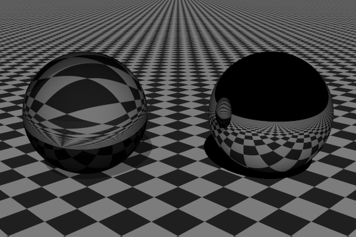
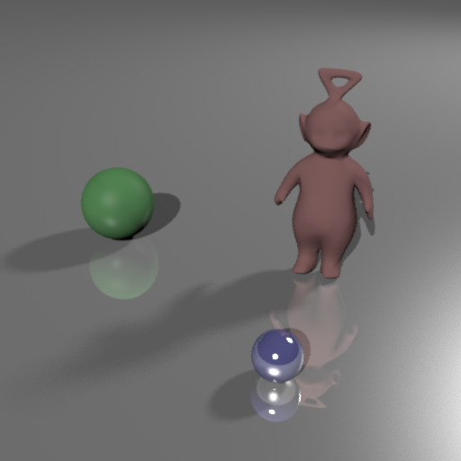
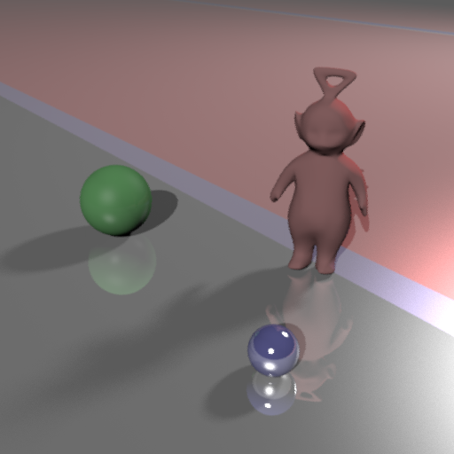

Dans cette partie nous avons eu à calculer l'intensité de la lumière pour chaque pixels que l'on a divisé en grille de taille $n * n$.
Cela afin de pouvoir obtenir plusieurs intensité de lumière pour chacun des pixels, car au centre de chaque case de la grille nous lancerons un nouveau rayon.
Lors de la réalisation de cette partie nous avons d'abord obtenue des résultats pas satisfaisant, dans lequels nous pouvions clairement voir le découpage réalisé lors de nos calculs.
Pour obtenir un échantillonnage stratifié, il faut comme précedement découper chaque pixel en grille.
A l'inverse de l'échantillonnage régulier, les nouveaux rayon seront lancé à des positions aléatoire et non plus au centre de chacune des cases.

Échantillonnage stratifié - Deux Spheres 32x32 non stratifié(gauche), 8x8 stratifié(droite)
3. Sources étendues
3.1. Échantillonnage de Monte-Carlo
Dans cette partie nous avons dû mettre en place une source de lumière étendue.
Pour cela nous devions calculer pour chaque rayon de lumière, un second rayon d'ombre ayant une direction aléatoire devait être calculer dans whitted.cpp.
Cette partie nous a pris quelques temps afin de la mener à bien, car nous oublions de normaliser notre LightDir et cela ne nous permettait pas d'avoir le bon résultats.

Échantillonnage stratifié source étendue
Échantillonnage stratifié source étendue 0.1x0.1(gauche) et 0.5x0.5(droite) - killeroo
3.2. Source texturée
Pour cette partie, nous avions rapidement compris le concept et l'idée du travail demandé. La lumière est remplacé par une texture avec 4 couleurs
Mais nos premières version n'était pas concluante, soit la lumière était entiérement rouge, soit nous avions des resultats comme sur l'image ci-dessous.

Échantillonnage stratifié avec texture - problème rencontré
Échantillonnage stratifié avec texture
4. Ambiante Occlusion
4.1. Échantillonnage d'un hémisphère
Dans cette partie il nous a suffit de completer les fonctions presente dans wrap.cpp à l'aide des formules vue en cours.
Cela afin de faire des calculs de points situé soir sur un disque soit sur une hémisphére de manière homogéne.
Cette dernière partie est celle qui nous a causé le plus de problème.
Lorsque nous avons fini de remplir la fonction Li() qui se situe dans ao.cpp, à chaque lancé du programme nous avions comme erreur "invalid radiance value".
Nous avons donc pensez que nous devions surment faire une division par zero à un certain endroit.
Après avoir fais testé notre code chez d'autre camarade, nous avons vue que le problème n'etait pas dans ao.cpp. Nous avons verifié chaque fichier que nous avions modifier et impossible de trouver l'erreur.
Nous avons finalement décidé de re-télécharger les fichiers d'origine et y incorporer notre code dedans, l'erreur a disparue après cela.
La méthode est donc de détecter si il y a une intersection, si il n'y en a pas les pixels seront noir.
Lorsqu'il y a une intersection alors nous utiliserons les fonctions d'hémisphére calculer dans wrap en un point aléatoire,
et à l'aide d'un plan (u,v) perdendiculaire à la normal nous pourrons effectuer les calculs demandé dans le TD, cela afin de determiner la couleur à l'intersection ainsi que le rayon d'ombre.